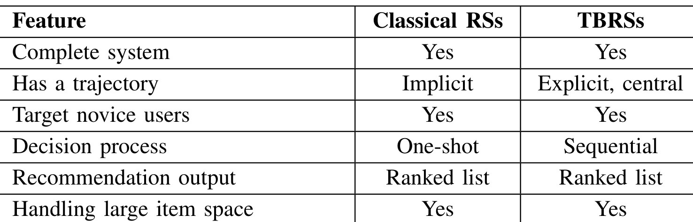
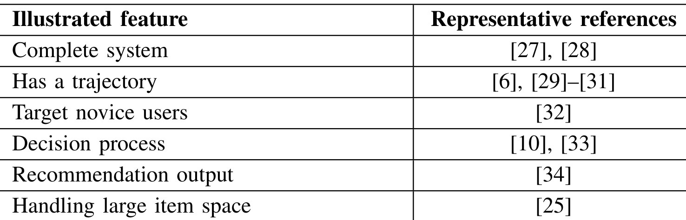
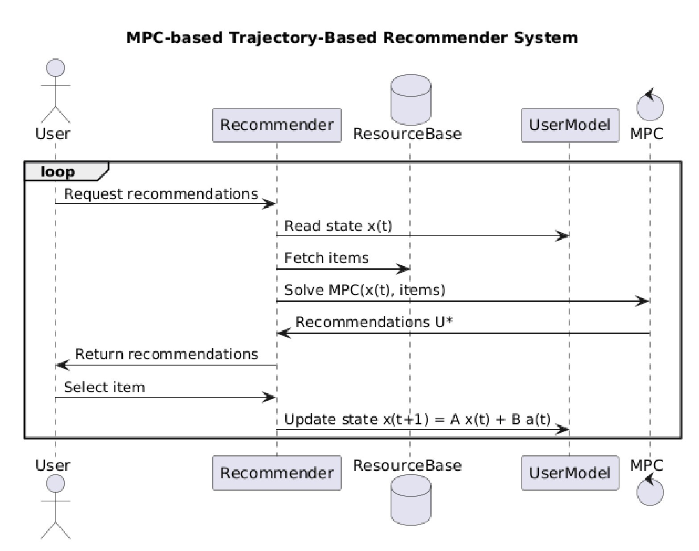
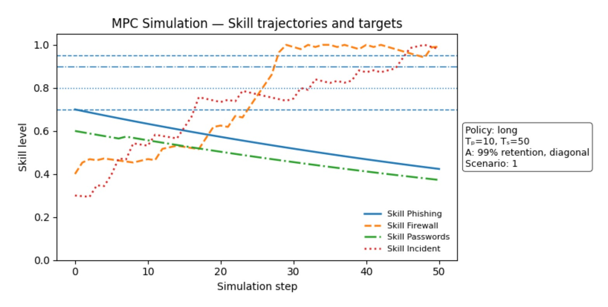
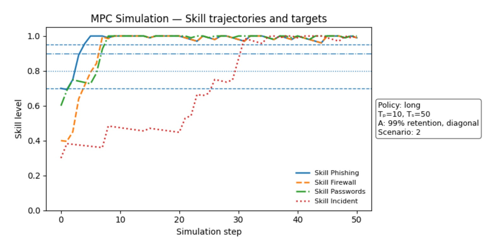
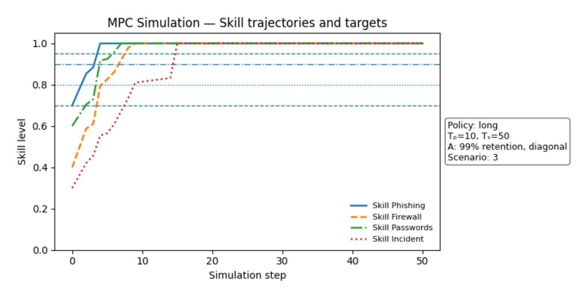
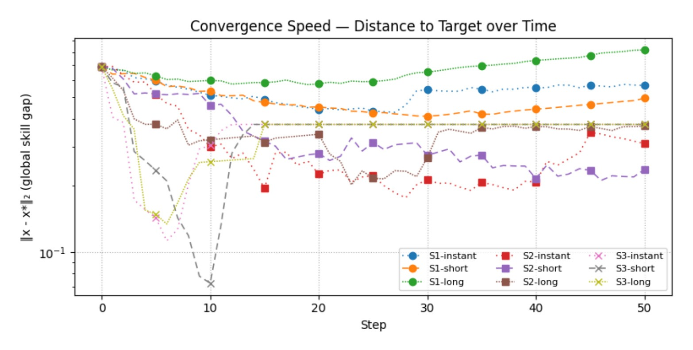

这篇论文讨论的是 Trajectory-Based Recommender Systems（TBRS）应该如何被形式化为控制系统。论文入口为 arXiv:2606.22957。作者为 Eriam Schaffter、Ahmed Bounekkar、Elsa Negre；一作主机构是 Université Claude Bernard Lyon 1 / ERIC，合作机构包括 Université Paris-Dauphine、PSL Research University 与 CNRS UMR 7243 LAMSADE。本文没有提出一个新的深度排序模型，也没有开源独立代码仓库；本轮只在 arXiv 页面和 PDF 中核验到论文条目，未核验到可直接复现实验的项目页。
许多推荐系统已经在教育、旅游、健康等场景里隐含地引导用户走向长期目标，但这些工作常被拆散在时间感知、序列推荐或领域系统名下，缺少一个把“目标、轨迹、用户选择和推荐动作”放在同一动态模型里的共同框架。本文要解决的不是再造一个排序模型，而是说明什么时候推荐系统应被看作沿目标状态推进用户的控制系统。
1. 背景和问题
传统推荐系统的基础问题通常可以概括为：给定用户、物品集合和某个相关性函数，系统从候选物品中挑出最可能被用户接受或最能带来即时效用的一组物品。协同过滤、内容推荐、上下文感知推荐、知识推荐等路线在建模细节上差别很大，但它们大多围绕“当前用户和当前物品是否匹配”展开。即便系统考虑了历史序列或时间上下文，很多时候时间仍只是一个提高短期排序质量的特征容器，而不是系统本身要优化的核心对象。
本文的切入点在于：有一类推荐问题并不只是“下一件物品最合适是什么”，而是“用户应该沿着怎样的状态序列走向一个目标”。教育推荐里，学习者可能希望达到某组能力水平；旅游推荐里，用户希望形成一条可执行的行程；医疗或健康管理里，推荐可能服务于长期行为改变或治疗路径。论文把这些系统称为 TBRS，并强调 trajectory 不是普通的历史序列，也不是自然产生的使用痕迹，而是系统设计时明确要控制和优化的对象。
这里有一个容易混淆的边界：序列推荐、长期兴趣建模、时间感知推荐并不天然等于 TBRS。序列推荐可以只预测下一次点击，长期兴趣模型可以只是为了提升召回命中率，时间感知模型可以只是利用季节、位置或短期偏好变化。TBRS 要求系统有一个显式或可表达的目标状态，并把推荐动作组织成对用户状态有方向性的推动。换句话说，TBRS 的关键不在于“系统看到了过去的序列”，而在于“系统要生成一条朝向目标的未来轨迹”。

Table I 是全文最重要的边界表。它没有把 TBRS 描述成一个替代所有推荐系统的新范式，而是说明 TBRS 与经典 RS 保留了共同底座：二者都是完整系统，都面向可能不具备充分判断能力的用户，都输出 ranked list，也都要处理大规模 item space。真正的差异集中在两列：经典 RS 的 trajectory 多数只是 implicit，而 TBRS 的 trajectory 是 explicit and central；经典 RS 的 decision process 更像 one-shot，而 TBRS 的过程是 sequential。这个表也解释了为什么本文后面必须引入控制理论：只有当系统明确承认用户状态会被连续推荐动作改变，推荐问题才会自然变成“如何从当前状态走向目标状态”的动态控制问题。
论文进一步用已有文献说明 TBRS 不是作者凭空发明的场景。教育路径推荐、旅游行程推荐、健康路径推荐、长期目标推荐等研究已经分别触碰了“用户缺少经验、需要序列化决策、系统要在大物品空间中组织路径”这些特征。只是这些研究常被放在不同应用域或不同技术标签下，缺少统一表述。作者承认这里的文献梳理是 representative 而不是 systematic，因此它的作用不是宣称已经完整覆盖整个 TBRS 版图，而是证明这些特征在多个领域中反复出现，值得被抽象成一个共同问题。

Table II 的价值在于把“这是一个概念框架”说清楚。它列出的不是 benchmark 数据集，也不是各方法的数值优劣，而是不同研究分别体现了哪些 TBRS 特征：有的文献体现完整系统，有的体现 trajectory，有的体现 novice user，有的体现 decision process。对读者来说，这张表提醒我们不要把本文当成实验论文阅读；它更像是在给一个尚未被充分命名的研究子领域搭脚手架。也正因为它只是代表性映射，后续要让 TBRS 成为稳定领域，还需要更系统的综述、统一任务定义和可复用数据集。
从推荐系统角度看，本文最值得注意的问题意识是“目标”和“用户利益”的关系。经典平台推荐常用 engagement 作为即时目标，用户沿着系统推荐走下去当然也会形成某种轨迹，但这种轨迹可能只是由短期点击收益诱导出来的路径，并不保证服务用户长期利益。TBRS 试图让目标显式化：系统不是单纯最大化当下相关性，而是把用户状态、目标状态和推荐动作的长期后果一起纳入模型。这里的“目标”也不必局限于学习，它可以是完成旅行计划、遵循护理路径、建立健康行为，或者在内容平台中避免短视诱导。
因此，本文真正要补的不是一个 loss trick，而是一个理论接口：如果推荐系统要持续影响用户状态，那它至少应该能回答四个问题。第一，用户状态是什么，如何被观测或估计；第二，推荐动作如何改变这个状态；第三，系统希望用户最终接近什么目标；第四，用户在每一步仍有选择权时，推荐器如何把最优控制转成可选择的 Top-k。后文的控制系统形式化正是在回答这四个问题。
2. 方法
2.1 把 TBRS 写成动态系统
论文在方法部分先从普通推荐公式开始，这是为了先给出一个对照基线：经典 RS 的目标是从资源集合里挑出当前最相关的物品，它关心的是单次推荐是否最大化当前效用，而不是推荐之后用户状态是否沿某个目标演化。这个基线可以写成：
符号解释：$R$ 是资源或物品集合，$r_i$ 是其中一个候选物品，$f(user,r_i)$ 表示该物品对当前用户的相关性或效用估计，$R^*$ 是被推荐出的子集。这个公式的直觉非常清楚：系统在当前时刻从所有物品中挑出最有用的一项或一组。但它没有显式表达“推荐之后用户状态如何变化”，也没有表达“若连续推荐多步，最终要到达哪里”。所以它适合解释经典 top-k 排序，却不足以描述目标驱动的轨迹推荐。
控制理论版本的 TBRS 则把用户看成一个动态系统，把推荐动作视为可以改变用户状态的控制输入。论文先给出最简单的线性形式，不是因为真实系统一定线性，而是为了让 state、resource effect、recommendation control 三者的关系可被明确讨论：
符号解释：$x(t)$ 是用户在时刻 $t$ 的状态，可以是学习者能力向量、健康状态向量、旅游偏好和约束状态，或者其他可被系统跟踪的多维状态；$A$ 表示用户状态的自然演化，比如学习遗忘、兴趣迁移、体力变化；$B$ 表示推荐资源对各状态维度的影响，教育场景里可以理解为每个学习资源对不同技能的提升矩阵；$u(t)$ 是系统在时刻 $t$ 给出的控制输入，在推荐系统语境里就是推荐动作或推荐资源的选择强度。这个式子是全文的核心抽象。它把推荐动作从“分数最高的物品”改写成“会改变用户状态的控制输入”。如果 $A$ 代表不受推荐干预时用户会怎样走，$B u(t)$ 就代表系统通过推荐能额外施加的方向。TBRS 的轨迹不再是日志里的点击序列，而是由状态转移方程描述的一条目标导向路径。这也是本文区别于普通 sequential recommendation 的地方：普通序列模型可以只学习条件概率，而 TBRS 需要明确谁在被控制、控制作用是什么、目标在哪里。这里也要澄清用户要求里提到的 state、action、reward、trajectory。本文明确使用 state 和 action/control 的语言，但它没有像强化学习论文那样定义显式 reward。它使用的是控制理论中的 cost，也就是希望最小化的状态偏差和控制代价。若要和 RL 对齐，可以把“负 cost”理解成 reward-like objective，但这只是解释上的类比，不应说本文提出了新的 reward model。trajectory 则由连续的 $x(t)$、推荐控制 $u(t)$、用户选择 $a(t)$ 和目标状态共同组成。
2.2 用 MPC 在有限视野里求推荐轨迹
有了动态系统之后，论文选择用 Model Predictive Control（MPC）说明如何求解。MPC 的基本思想不是一次性规划从现在到终点的完整路径，而是在当前状态下看一个有限 horizon，先求一段最优控制序列，只执行其中和当前交互有关的部分，然后观察新状态，再重新优化。这个思路很适合推荐系统，因为用户会选择、会偏离、会因为推荐结果发生变化，系统无法假设未来完全按计划执行。
论文把 MPC 目标写成有限视野的二次代价，这个代价函数是本文把“长期目标”落到数学优化里的关键位置：状态项让用户不要偏离目标方向，控制项让推荐动作不要过强或过贵，终端项则给预测视野末端更高权重。读这条公式时要把它看成 TBRS 的“负 reward”视角：系统不是奖励即时点击，而是在惩罚未来轨迹偏差和推荐负担。
符号解释：$U^*(t)$ 是从当前时刻开始的最优控制序列；$T$ 是预测视野；$Q$ 对状态偏差加权，鼓励状态更快或更稳定地接近目标；$R$ 对控制输入加权，惩罚过强、过难、过贵或不现实的推荐动作；$Q_f$ 强调终端状态质量。这个式子中的 $x^\top Qx$ 可以理解为“用户状态离理想方向还有多远”，$u^\top Ru$ 则对应“为推动用户前进付出了多少推荐成本”。教育场景中，高难度资源可以被赋予更高 $R$ 权重，避免系统为了快速提升某个能力而连续推荐过难内容。这个目标函数揭示了本文对“长期好推荐”的定义：不是让每一步都局部最优，而是让一段未来状态和控制成本整体更优。它也保留了控制理论的扩展空间。若用户模型不线性，可以换成非线性动态；若观测不完整，可以引入随机控制或 POMDP 风格的建模；若需要安全边界，可以把不允许推荐的资源、学习负荷上限、医疗路径约束等写进控制约束。目标状态 $x_{target}$ 在教育例子里尤其重要。论文说明，在所给 MPC 公式里 target state 并不直接进入优化项，它更像 reference；如果必须保证达到某个目标，就应把它写成附加约束。这个细节很关键，因为它防止读者误以为只要套公式就一定能“到达目标”。实际系统需要决定目标是软目标、硬约束，还是评价指标的一部分。对推荐工程来说，这会影响系统是否允许用户暂时绕路、是否允许探索、以及怎样处理用户拒绝推荐的情况。
2.3 从控制序列到 Top-k 推荐和用户动作
推荐系统与自动控制系统最大的差异，是推荐器不能直接把控制向量完整施加到用户身上。自动控制里，控制器可以把 $u_0(t)$ 作用到机器或物理系统；推荐系统里，用户仍然看到一个 Top-k 列表，并从中选择一个资源。论文因此把 MPC 输出和 Top-k 之间的转换作为单独问题处理。
在论文的 Top-k 讨论里，MPC 先产生一段控制序列，而不是直接输出一个页面上可见的推荐列表；这个中间对象保留了未来若干步的规划信息，因此是后续短视、中视或长视投影策略的来源。也就是说，推荐器真正面对的不是“一个最优物品”，而是一组跨时间步的潜在控制动作：
符号解释：$u_0(t)$ 是立即可执行的控制，后面的 $u_1(t)$ 到 $u_T(t)$ 是预测视野中后续步的控制。若系统只从 $u_0(t)$ 里挑选推荐项，就是更短视的策略；若系统把未来若干步控制也纳入候选池，就可以让 Top-k 同时包含当前收益和长期引导价值。
为了把这段未来控制序列压缩成用户可见的 Top-k，论文用投影矩阵表达策略选择；这个矩阵相当于告诉系统哪些未来步、哪些资源维度可以进入候选列表。这个步骤很重要，因为同一个 $U^*(t)$ 可以导出不同推荐列表，短期友好和长期目标之间的权衡就在这里发生：
符号解释：$P^p_K$ 是某种策略投影矩阵，$p$ 可以代表 short、medium 或 long 等不同视野；$\odot$ 是 Hadamard product，也就是逐元素相乘。这个公式的含义是：系统不是机械地把 MPC 的第一步控制拿来排序，而是可以通过投影策略选择哪些未来控制项参与 Top-k 构造。短视策略可能只选前两组控制，中视策略可能让不同资源覆盖不同未来步，长视策略则可能让候选项更偏向远期目标。这里的策略选择会强烈影响用户体验，因为用户看到的是一个列表，而不是控制器内部的完整矩阵。

Figure 1 把上面的数学关系翻译成系统流程。用户先请求推荐，Recommender 读取 UserModel 中的当前状态 $x(t)$，再从 ResourceBase 拉取可用资源，MPC 根据当前状态和资源库求解 $U^*$，推荐器把它转成推荐列表返回给用户。关键是图下半部分：用户不是被动接受控制器命令，而是从推荐列表里 select item；系统再把这个选择反馈到 UserModel，更新为下一时刻状态。这个 loop 说明 TBRS 的控制不是“替用户做决定”，而是“用控制模型生成一组更有长期方向感的可选项”。因此它能同时保留用户 agency 和目标导向，这也是教育推荐、医疗路径推荐这类场景特别需要的性质。
在用户真正选择某个资源之后，系统才把推荐计划转成已执行动作；论文用下面这个状态更新式表示 human-in-the-loop 的关键一步。它把“系统建议”和“用户实际选择”区分开来，避免把推荐器的规划误认为对用户状态的直接控制：
符号解释：$a(t)$ 是 one-hot action vector，表示用户在 Top-k 中实际选择了哪一个资源；$u(t)\odot a(t)$ 把推荐器计划中的控制输入压缩成用户实际执行的单一资源作用；$B$ 再把这个资源作用映射到状态变化。这个式子比普通点击反馈更强，因为它把点击或选择直接放进状态转移。用户没有选择某项资源时，那项资源即使在 MPC 里看起来长期最优，也不会直接改变用户状态。系统必须在下一轮重新读状态、重新求解。
2.4 Educational RS 示例：学习资源如何变成控制输入
教育推荐是本文最具体的应用说明。作者把学习者状态 $x(t)$ 解释为技能掌握向量，把资源库中的每个学习资源看成 $B$ 的一列，即该资源对不同技能维度的影响。$A$ 可以表示自然遗忘或学习状态的无推荐演化，论文举了 Ebbinghaus forgetting curve 作为可选直觉。目标状态 $x_{target}$ 则表示学习者希望在学习期末达到的能力水平。
在这个设定下，推荐器要做的不是“哪个视频最可能被点击”，而是“哪一组学习资源能在未来几步内让技能向量更接近目标”。学习者看到的是 Top-k 学习资源列表，选择自己愿意学习的一项；系统把这个选择推断为 action $a(t)$，假设消费该资源就获得资源定义的能力增量，然后更新 $x(t+1)$ 并重新求解下一轮 MPC。这个循环天然适合教育场景，因为学习者需要自主选择，同时系统又要避免只推荐容易、好点、但对长期能力目标贡献小的内容。
不过这个例子也暴露了框架落地时最难的部分。首先，$x(t)$ 不容易准确观测，真实学习者能力不是一个随时可见的干净向量，往往需要测验、作业、行为日志和知识追踪模型共同估计。其次，$B$ 的列也很难人工确定，一个资源到底提升哪些技能、提升多少、是否有前置依赖，都需要教学知识或数据学习。第三，论文把“消费资源等于获得资源指定能力水平”作为简化，这在真实教育中明显过强。读者应把 ERS 部分理解为框架演示，而不是已经可直接部署的学习路径推荐系统。
3. 实验结果
3.1 实验设置：这不是线上推荐评测
本文的实验部分不是 RecSys 常见的离线 benchmark，也没有报告 precision、recall、NDCG 或线上点击提升。作者使用合成数据测试一个基于 MPC 的教育推荐方案，目标是展示控制框架能生成怎样的技能轨迹，而不是证明某个模型在真实数据集上优于 baseline。论文设定了三种资源结构：mono-competence resources、semi-clustered competences、multi-competence resources。它们对应 $B$ 矩阵中资源对技能维度的影响是否稀疏、是否局部重叠、是否多维联动。
具体参数上，作者使用 80 个随机资源，让求解器在一个小但不至于太空的 item space 中优化轨迹；Top-k 大小设为 8；优化每 10 步重新解一次；仿真总共跑 50 步；学习者选择被模拟为更倾向于高排名推荐，同时带有少量随机成分；$A$ 使用 99% retention 的 diagonal 设置，相当于很轻的遗忘。作者也尝试了不同 $Q$ 和 $Q_f$ 参数，并让更困难资源在 $R$ 中具有更高权重。所有这些都说明实验的主要目的在于“看框架行为”，不是评估真实学习效果。
这一节最应该关注的是变量之间的可解释性，而不是曲线是否漂亮。若 $B$ 稀疏，每个资源只影响一个技能，系统可能难以同时推进多个能力；若 $B$ 有半聚类结构，资源能同时影响相关技能，收敛会更快；若 $B$ 更稠密，多技能资源可能迅速把所有技能拉向目标，但这也可能只是因为合成资源设计过于有利。Figure 2-5 共同说明了这个问题：控制理论框架可以让我们分析轨迹，但轨迹质量高度依赖状态、资源影响矩阵、用户选择模型和代价权重。
3.2 三类资源耦合假设下的技能轨迹

Figure 2 展示 mono-competence resources 下的技能轨迹。横轴是 simulation step，纵轴是 skill level，四条曲线对应 Phishing、Firewall、Passwords、Incident 四个技能。可以看到 Firewall 和 Incident 逐步上升并接近高位目标，而 Phishing 和 Passwords 反而随时间下降或保持较低。这正符合 mono-competence 假设的局限：如果每个资源主要影响单一技能，而 Top-k 又由长期策略和用户随机选择共同决定，系统可能优先推动某些技能，另一些技能则受自然遗忘或资源覆盖不足影响。这个图不能证明 MPC 不好，而是说明 TBRS 的效果取决于资源库能否为目标状态提供足够方向。若教育平台只有偏科资源，再好的轨迹优化也很难均衡提升所有技能。
更细看这张图，虚线目标水平并没有被所有技能同步追上，说明控制器在有限资源和用户随机选择下会出现“局部推进、整体不齐”的状态。对教育推荐而言，这正是 TBRS 比普通 Top-k 更需要评价轨迹的原因：单次推荐可能看起来合理，但 50 步以后可能让某些技能长期滞后。工程实现时，如果平台只观察点击或完成率，就会漏掉这种跨技能不均衡；如果观察状态距离或技能覆盖，就能更早发现资源结构不足。

Figure 3 换成 semi-clustered competences 后，四个技能更快接近目标。Phishing、Firewall、Passwords 在前十几步就达到或接近 1.0，Incident 也在后半段追上。这说明当资源对相关技能存在有限重叠时，系统每次推荐不再只推动一个孤立维度，而能通过一个学习动作同时带动一组相邻能力。用控制系统语言说，$B$ 矩阵的列不再是几乎 one-hot 的单维影响，而是具有局部耦合。这个结果对教育推荐有直觉价值：好的学习资源往往不是只训练一个离散知识点，而是覆盖一组相互关联的概念。可是，Figure 3 仍然来自合成资源，不能直接推出真实课程资源也会产生同样收敛速度。
这张图还隐含了一个产品侧判断：资源标签和知识图谱越能反映真实技能耦合，MPC 越容易找到低负担路径。若一个学习资源同时覆盖 Phishing 和 Passwords，系统就不必在两个完全独立的推荐动作之间做硬切换；它可以用一个资源推进多个目标维度。反过来，如果资源标注错误，把单技能资源误标为半聚类资源，控制器就会高估推荐效果，导致图中这种快速收敛只停留在仿真里。

Figure 4 的 multi-competence resources 更激进：几条技能曲线在很短步数内几乎全部到达 1.0。它可以被解释为一个更稠密的 $B$ 矩阵，每个资源同时作用于多个技能，因此一次推荐产生更大范围的状态更新。这个图很好地说明了控制视角如何分析资源设计：若平台拥有跨技能资源，长期目标可能更容易达成；若资源之间覆盖均匀且互补，MPC 更容易找到有效路径。但这也带来风险，真实学习资源很少能无副作用地同时提升所有技能。若系统高估了多技能资源的效果，MPC 会过度依赖这些资源，导致推荐路径在真实学习者身上失效。因此 Figure 4 更像上界示意，而不是工程承诺。
对照 Figure 2 和 Figure 3，Figure 4 说明“资源影响矩阵”几乎决定了轨迹优化的难度。控制器本身没有魔法，它只是利用 $B$ 中记录的资源作用去规划；当 $B$ 表示每个资源都能强力提升多个维度，路径自然变短。真实系统需要特别警惕这种乐观设定，因为跨技能资源往往伴随认知负荷、前置条件和用户偏好限制。如果这些约束没有进入 $R$ 或额外控制约束，仿真会把困难学习路径误读成快速收敛路径。
3.3 收敛速度和策略选择：Figure 5 能证明什么

Figure 5 把三种 scenario 和 instant、short、long 等策略放在一起看，用到目标状态的欧氏距离表示 convergence speed。它的信息量比前三张图更大：同一 scenario 下，不同投影策略的距离曲线可以明显不同；不同 scenario 下，同一种策略也可能表现完全不同。例如 Scenario 3 中某些策略会很快把距离压低，而 Scenario 1 的 long 策略反而保持较高距离。这说明 Top-k 从 $U^*(t)$ 中如何投影出来，不是一个实现细节，而是 TBRS 的核心 policy design。推荐器最终给用户看的列表如果只偏向短期控制，可能牺牲长期目标；如果过度偏向远期控制，用户可能不愿意选，或者当前技能缺口反而被放大。
这个图也提醒读者，MPC 的“最优”只是在给定模型、给定代价、给定用户选择模拟下的最优。Figure 5 中的距离没有和真实学习结果对齐，也没有统计显著性或 baseline 对比。它更适合回答“这个框架能生成哪些可分析的输出”，而不是回答“它是否优于深度学习推荐”。如果要把这套框架用于真实 ERS，至少需要把技能测量、资源效果估计、用户选择概率、目标约束和评价指标都放到真实数据中校准，并用离线回放或在线实验检验。
3.4 指标解释和证据强度
论文在方法后提到 TBRS 仍可使用 precision、recall、RMSE、NDCG 等传统排序指标，也可使用领域指标，例如与 top learners 的距离。但从本文实验看，真正展示的是 $\lVert x-x^\rVert$ 这类状态距离，而不是传统推荐准确率。这个选择是合理的，因为 TBRS 的目标不是只让用户点击推荐项，而是让状态轨迹接近目标。问题在于，状态距离必须可信：如果 $x$ 是估计出来的学习能力，$x^$ 是人为设定目标，距离下降是否代表真实学习进步，就需要外部评估支撑。
因此本文证据强度可以分成三层。第一层是形式化证据：论文成功把 TBRS 写成动态系统，并把 MPC、Top-k、用户动作连接起来，这部分最扎实。第二层是解释性仿真：Figure 2-5 说明不同资源耦合和投影策略会改变轨迹，这部分能帮助理解框架行为。第三层是真实有效性：本文基本没有覆盖，作者也明确未来需要在真实环境或离线数据集上验证。阅读时应把它定位为“理论框架与概念验证”，而不是“已完成实证评估的推荐算法论文”。
4. 总结
4.1 我的判断
这篇论文的价值在于把一个长期存在但命名不稳定的问题说清楚：有些推荐系统的核心不是下一次互动，而是用户状态如何沿着目标前进。用控制理论表达 TBRS，有三个好处。第一，它给 state、control、target、trajectory、cost 这些概念提供了共同语言；第二，它自然容纳约束、鲁棒性、随机性和滚动优化；第三，它把 Top-k 推荐和用户选择的关系放回系统循环，而不是把用户点击仅当作训练标签。
但它不是成熟工程方案。最大的缺口是可观测性和可估计性：真实平台很难准确知道用户状态 $x(t)$，也很难知道资源作用矩阵 $B$。第二个缺口是目标设定：谁定义 $x_{target}$，用户能否修改，目标冲突时如何处理，论文没有展开。第三个缺口是用户选择模型：Figure 1 保留了 user agency，但仿真中选择行为只是简单随机偏向高排名，这和真实学习者差距很大。第四个缺口是评价：没有真实数据、baseline、消融或线上实验，无法判断框架能带来多少推荐质量提升。
4.2 工程启发与后续跟进
如果要把这篇论文转成工程研究，我会先从教育或任务型推荐的小闭环做起，而不是直接替换大规模内容平台排序。第一步是定义可测的状态向量，例如知识点掌握度、任务完成状态、健康行为阶段，而不是泛泛的兴趣 embedding。第二步是估计资源影响矩阵 $B$，可以从课程先验、标签图谱、知识追踪或因果估计中获得。第三步是把目标函数里的 $Q$、$R$、$Q_f$ 做成可解释参数，让产品和领域专家能控制“收敛速度”和“学习负担”的权衡。第四步才是比较短视、中视、长视 Top-k 投影策略，并通过离线回放和小流量实验看用户是否真的愿意沿轨迹走。
后续值得跟进的方向至少有三类。其一，把 TBRS 与 reinforcement learning recommender 区分清楚：二者都关心长期后果，但 TBRS 这里强调控制系统和目标状态，未必需要学习 reward policy。其二，把状态观测不完整的问题引入，例如用 POMDP 或 Bayesian filtering 表示未知学习能力。其三，把用户 agency 写得更真实：用户可能跳过、反复学习、选择低难度项，也可能因为推荐负担过重而离开系统。只有这些行为进入状态更新，TBRS 才能从漂亮框架走向真实系统。
总的来说，本文更适合作为“TBRS 该如何被形式化”的起点，而不是作为“最新推荐模型效果提升”的论文来读。它没有复杂神经网络，也没有强实验结果，但它把目标导向推荐、MPC、Top-k 策略和教育学习路径放进同一个闭环里，这对做长期用户价值、学习路径、健康路径或任务型推荐的人很有启发。真正的挑战不是能否写出控制方程，而是能否在真实系统中可靠估计状态、约束目标、尊重用户选择，并证明轨迹优化确实比短期排序更符合用户利益。